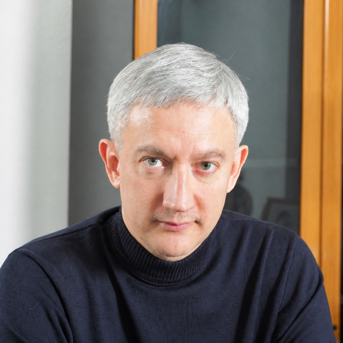
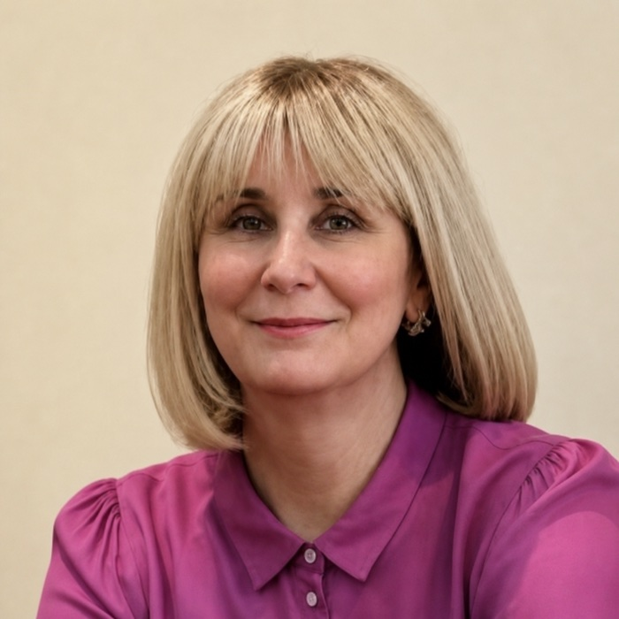
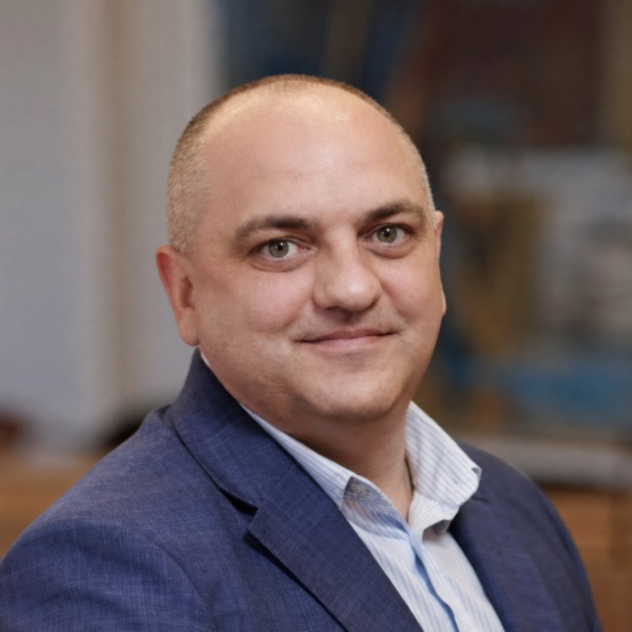
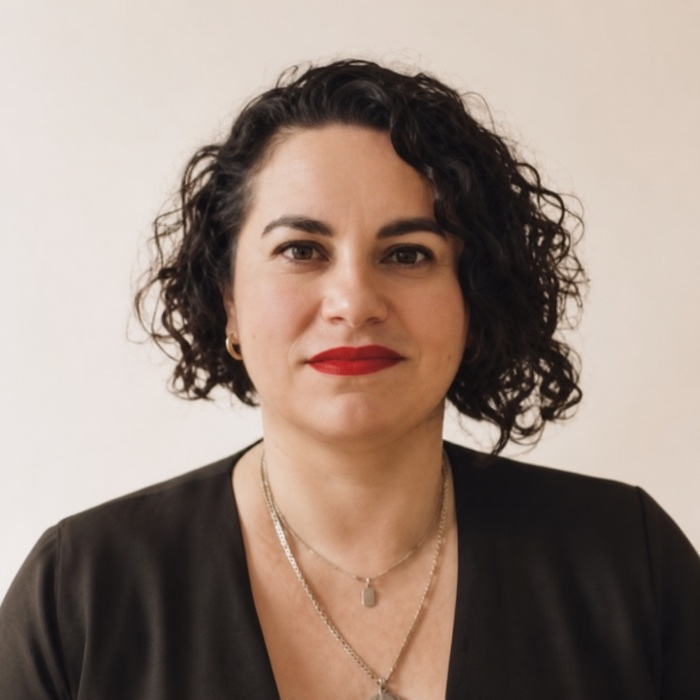

Дедлайн рукописівManuscript deadline
30.09 2026Випуск 01 / 2026Issue 01 / 2026
Інтелектуальні технології, аерокосмічні системи та індустріальні інновації: синергія науки та виробництва Intelligent Technologies, Aerospace Systems, and Industrial Innovation: Synergy of Science and Production
ITASII 2026
§ 01 / КалендарCalendar
Ключові датиKey dates
Повідомлення про прийняттяAcceptance notification
15.10 2026Проведення конференціїConference dates
29–30.10 2026 · Online§ 02 / ТематикаTopics
Напрями конференціїConference tracks
01 / Aerospace
Аерокосмічні системи та технологіїAerospace systems and technologies
Проєктування ЛА · рушії · навігація · БПЛАAircraft design · propulsion · navigation · UAV02 / AI & INTELLIGENT SYSTEMS
Інтелектуальні системи та штучний інтелектIntelligent systems and artificial intelligence
ML/DL · комп’ютерний зір · NLP · агентні системи XRML/DL · computer vision · NLP · agent systems03 / Industry 4.0
Індустрія 4.0 та цифрові технологіїIndustry 4.0 and digital technologies
IoT · цифрові двійники · адитивні технологіїIoT · digital twins · additive manufacturing04 / Energy
Енергетика та сталі технологіїEnergy and sustainable technologies
Відновлювана енергія · накопичення · декарбонізаціяRenewable energy · storage · decarbonization05 / Logistics
Логістика, транспорт і морські технологіїLogistics, transport, and maritime technologies
Автономний транспорт · морська інженерія · портова логістикаAutonomous transport · marine engineering · port logistics§ 03 / ОрганізаціяOrganization
Комітети конференціїConference committees
Організаційне керівництво ITASII 2026 представляє два провідні українські університети — Національний аерокосмічний університет «ХАІ» та Одеський національний технологічний університет.The ITASII 2026 leadership represents two leading Ukrainian universities: the National Aerospace University “KhAI” and Odesa National University of Technology.

Почесний головаHonorary Chair
Oleksii Lytvynov
Доктор юридичних наук, професорDoctor of Law, ProfessorNational Aerospace University “KhAI”

Почесна головаHonorary Chair
Larysa Ivanchenkova
Доктор економічних наук, професорDoctor of Economic Sciences, ProfessorOdesa National University of Technology

Виконавчий головаExecutive Chair
Dmytro Krytskyi
Доктор філософії, доцентDoctor of Philosophy, Associate ProfessorNational Aerospace University “KhAI”

Виконавча головаExecutive Chair
Olga Olshevska
Доктор філософії з технічних наук, доцентPhD in Technical Sciences, Associate ProfessorOdesa National University of Technology
Готові подати доповідь?Ready to submit a paper?
Дедлайн подання матеріалів — 30 вересня 2026 року. Відібрані статті плануються до публікації у збірнику Springer; остаточне рішення ухвалює видавець.The submission deadline is 30 September 2026. Selected papers are planned for a Springer proceedings volume; final publication is subject to the publisher’s decision.